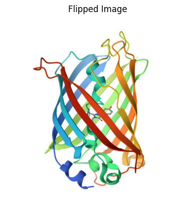
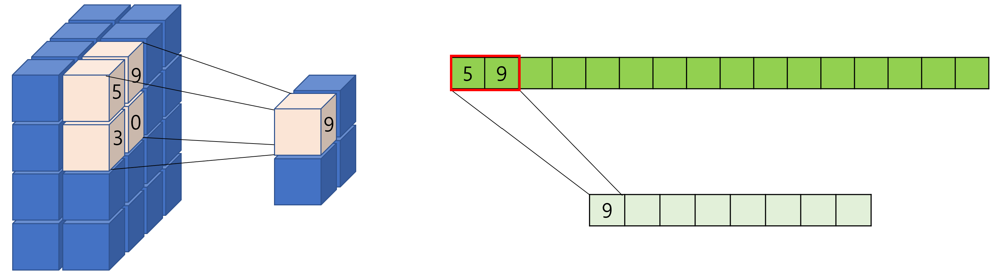
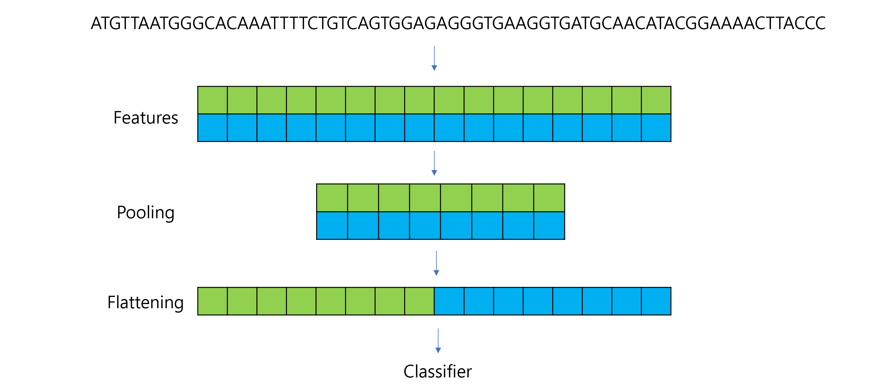

Convolutional Neural Networks (CNNs) are a type of deep learning model specifically designed for recognizing patterns and spatial hierarchies in data. While traditionally used in image processing, CNNs are also powerful for tasks involving sequential data, such as DNA sequences, because of their ability to detect local patterns.
from PIL import Image # For reading and processing imagesimport matplotlib.pyplot as pltimport numpy as npimport torch# Load the imageimage_path ='images/3cbe_model-1.jpeg'# Replace with your image pathimage = Image.open(image_path)# Show basic propertiesprint("Image Size:", image.size) # (width, height)print("Image Mode:", image.mode) # e.g., "RGB"# Display the imageplt.imshow(image)plt.title("3CBE")plt.axis("off")plt.show()
# Flip the image horizontallyflipped_tensor = image_tensor.flip(2) # Flip along the last dimension (width)# Convert back to NumPy for visualizationflipped_image = flipped_tensor.squeeze(0).permute(1, 2, 0).numpy()# Display the flipped imageplt.imshow(flipped_image)plt.title("Flipped Image")plt.axis("off")plt.show()

5.3 Dot products
A fundamental operation in linear algebra that combines two vectors to produce a single scalar value.
It measures how aligned two vectors are and has applications in geometry, physics, and machine learning.
For two vectors $ = [a_1, a_2, , a_n] $ and $ = [b_1, b_2, , b_n] $ in \(n\)-dimensional space, the dot product is defined as:
Geometric Example If $ || = 5 $, $ || = 3 $, and the angle between them is $ = 60^\(, the dot product is:\)$ = || || = 5 (60^) = 15 = 7.5 $$
Applications in Machine Learning
Similarity Measurement: Dot product measures similarity between vectors, such as in cosine similarity.
Convolutions: Extract features by computing dot products between filters and input regions.
Attention Mechanisms: Uses dot products to calculate importance weights between query and key vectors.
5.4 Dataset and Dataloader
5.4.0.1 Dataset
A class that represents your data, providing a way to access samples and their corresponding labels.
We can define a custom dataset by subclassing torch.utils.data.Dataset and overriding:
__len__: Returns the total number of samples.
__getitem__: Retrieves a single sample (data and label) by index.
import torchfrom torch.utils.data import Dataset, DataLoaderimport numpy as npclass SimpleDataset(Dataset):def__init__(self, size):# Generate random x valuesself.x = np.random.rand(size, 1) *10# Shape: (size, 1)self.y =2*self.x +3# Generate labels (y = 2x + 3)def__len__(self):# Total number of samplesreturnlen(self.x)def__getitem__(self, idx):# Retrieve the sample at index `idx` sample = torch.tensor(self.x[idx], dtype=torch.float32) label = torch.tensor(self.y[idx], dtype=torch.float32)return sample, label# Create an instance of the datasetdataset = SimpleDataset(size=100)# Access the first samplesample, label = dataset[0]print("Sample:", sample, "Label:", label)# Check the length of the datasetprint("Number of samples in dataset:", len(dataset))
Sample: tensor([0.6128]) Label: tensor([4.2255])
Number of samples in dataset: 100
5.4.0.2 Dataloader
It provides “Efficient batching of data”, “Shuffling of data to avoid bias”, and “Parallel data loading using multiple workers.”
Batch Processing:
Instead of processing one sample at a time, DataLoader automatically groups samples into batches.
This improves computational efficiency, especially with GPUs.
Shuffling:
Shuffles the data during training to reduce bias.
Parallel Loading:
Loads data in parallel using multiple workers (num_workers parameter).
# Create a DataLoader to handle batchingdataloader = DataLoader(dataset, batch_size=10, shuffle=True)# Iterate through the DataLoaderfor batch_idx, (batch_samples, batch_labels) inenumerate(dataloader):print(f"Batch {batch_idx +1}")print("Samples:\n", batch_samples)print("Labels:\n", batch_labels)break# Show only the first batch
Stride = 1: The kernel moves one position at a time. This results in a highly overlapping convolution operation
Stride > 1: The kernel skips positions while sliding, reducing the spatial dimensions of the feature map. This makes the computation faster but may lose some spatial detail.
For a 1D convolution, the output size is calculated as: \[
\text{Output Length} = \left\lfloor \frac{\text{Input Length} - \text{Kernel Size} + 2 \times \text{Padding}}{\text{Stride}} \right\rfloor + 1
\]
For a 2D convolution, the output size for height and width is: \[
\text{Output Height} = \left\lfloor \frac{\text{Input Height} - \text{Kernel Height} + 2 \times \text{Padding}}{\text{Stride}} \right\rfloor + 1
\]
To reduce the spatial dimensions of feature maps. It helps reducing the computational complexity of the network, aggregating features, making the model more robust to small translations or distortions in the input
Types:
Max Pooling: Keeps the maximum value in a window.
Average Pooling: Averages the values in a window.

import torch.nn as nnimport torch.nn.functional as Fclass DNA_CNN(nn.Module):def__init__(self):super(DNA_CNN, self).__init__()# Convolution Layer: 4 input channels, 1 filter, kernel size=5self.conv1 = nn.Conv1d(in_channels=4, out_channels=1, kernel_size=5, stride=1, padding=0)# Pooling Layer: Max Pooling with kernel size=2, stride=2self.pool = nn.MaxPool1d(kernel_size=2, stride=2)def forward(self, x): x =self.conv1(x) # Convolution x = F.relu(x) # ReLU activation x =self.pool(x) # Max Poolingreturn x# Example DNA sequencesequence, label = dataset[0] # First samplesequence = sequence.unsqueeze(0) # Add batch dimension (1, 4, 20)# Instantiate the model and pass data through itmodel = DNA_CNN()output = model(sequence)print("Input Shape:", sequence.shape) # (1, 4, 20)print("Output Shape After Convolution:", model.conv1(sequence).shape) # (1, 1, 16)print("Output Shape After Pooling:", output.shape) # (1, 1, 8)
Input Shape: torch.Size([1, 4, 20])
Output Shape After Convolution: torch.Size([1, 1, 16])
Output Shape After Pooling: torch.Size([1, 1, 8])
5.8 Flattening
Converts the multidimensional output of a convolutional or pooling layer into a 1D vector.
This is necessary because the subsequent layers (like fully connected or dense layers) expect inputs to be in a flattened format.

import torch.nn as nnimport torch.nn.functional as Fclass DNA_CNN(nn.Module):def__init__(self):super(DNA_CNN, self).__init__()self.conv1 = nn.Conv1d(in_channels=4, out_channels=2, kernel_size=5, stride=1, padding=0)self.pool = nn.MaxPool1d(kernel_size=2, stride=2)self.fc1 = nn.Linear(1*16, 1) # Fully connected layer (adjust input size)def forward(self, x): x =self.conv1(x) # Convolution x = F.relu(x) # ReLU activation x =self.pool(x) # Max Pooling x = torch.flatten(x, start_dim=1) # Flatten for fully connected layer x =self.fc1(x) # Fully connected layerreturn x# Example DNA sequencesequence, label = dataset[0] # First samplesequence = sequence.unsqueeze(0) # Add batch dimension (1, 4, 20)# Instantiate the model and pass data through itmodel = DNA_CNN()output = model(sequence)print("Input Shape:", sequence.shape) # (1, 4, 20)print("Shape After Convolution:", model.conv1(sequence).shape) # (1, 1, 16)print("Shape After Pooling:", model.pool(model.conv1(sequence)).shape) # (1, 1, 8)print("Shape After Flattening:", torch.flatten(model.pool(model.conv1(sequence)), start_dim=1).shape) # (1, 8)print("Output Shape (Final):", output.shape) # (1, 1)
Input Shape: torch.Size([1, 4, 20])
Shape After Convolution: torch.Size([1, 2, 16])
Shape After Pooling: torch.Size([1, 2, 8])
Shape After Flattening: torch.Size([1, 16])
Output Shape (Final): torch.Size([1, 1])
5.9 Fully Connected Layers
Perform classification or regression based on the extracted features.
Combines all the features detected by earlier layers to predict an output.
5.10 Output Layer
Generate the final prediction.
Activation Functions:
Sigmoid: For binary classification.
Softmax: For multi-class classification.
import torch.nn as nnimport torch.optim as optimimport torchimport torch.nn as nnimport torch.optim as optimclass DNA_CNN(nn.Module):def__init__(self):super(DNA_CNN, self).__init__()self.conv1 = nn.Conv1d(in_channels=4, out_channels=16, kernel_size=3, stride=1, padding=1) # output length: 20 - 3 + 2*1 + 1 = 20self.relu = nn.ReLU() # self.maxpool = nn.MaxPool1d(kernel_size=2)self.flatten = nn.Flatten()self.fc1 = nn.Linear(in_features=160, out_features=64) self.fc2 = nn.Linear(in_features=64, out_features=2) #self.softmax = nn.Softmax(dim=1)def forward(self, x): x =self.conv1(x) x =self.relu(x) x =self.maxpool(x) x =self.flatten(x) x =self.fc1(x) x =self.fc2(x)#x = self.softmax(x)return xmodel = DNA_CNN()if torch.cuda.is_available(): model.cuda()from torchsummary import summarysummary(model, input_size=(4, 20)) # (Channels, Length)
# Create test dataset and dataloadertest_dataset = SequenceDataset(test_data, test_labels)test_dataloader = DataLoader(test_dataset, batch_size=32, shuffle=False)# Evaluate the modelmodel.eval() # Set model to evaluation modecorrect =0total =0with torch.no_grad(): # Disable gradient calculation for testingfor sequences, labels in test_dataloader: sequences = sequences # (batch_size, 4, seq_length) labels = labels.long() # Convert labels to long for CrossEntropyLoss# Forward pass outputs = model(sequences)# Get predictions _, predictions = torch.max(outputs, 1)# Count correct predictions correct += (predictions == labels).sum().item() total += labels.size(0)print(f"Test Accuracy: {100* correct / total:.2f}%")
Test Accuracy: 96.75%
5.11.1 Device for computation
import torch# Check if CUDA is availableif torch.cuda.is_available():print("CUDA is available. Training will be performed on GPU.")else:print("CUDA is not available. Training will be performed on CPU.")print(next(model.parameters()).device)print(sequences.device)print(labels.device)print(f"Allocated GPU memory: {torch.cuda.memory_allocated() /1024**2:.2f} MB")print(f"Cached GPU memory: {torch.cuda.memory_reserved() /1024**2:.2f} MB")
CUDA is available. Training will be performed on GPU.
cpu
cpu
cpu
Allocated GPU memory: 8.44 MB
Cached GPU memory: 22.00 MB
!nvidia-smi
Mon Dec 2 12:58:41 2024
+---------------------------------------------------------------------------------------+
| NVIDIA-SMI 535.183.04 Driver Version: 538.78 CUDA Version: 12.2 |
|-----------------------------------------+----------------------+----------------------+
| GPU Name Persistence-M | Bus-Id Disp.A | Volatile Uncorr. ECC |
| Fan Temp Perf Pwr:Usage/Cap | Memory-Usage | GPU-Util Compute M. |
| | | MIG M. |
|=========================================+======================+======================|
| 0 NVIDIA RTX A5500 Laptop GPU On | 00000000:01:00.0 Off | Off |
| N/A 55C P8 12W / 82W | 1419MiB / 16384MiB | 0% Default |
| | | N/A |
+-----------------------------------------+----------------------+----------------------+
+---------------------------------------------------------------------------------------+
| Processes: |
| GPU GI CI PID Type Process name GPU Memory |
| ID ID Usage |
|=======================================================================================|
| 0 N/A N/A 2669 C /python3.11 N/A |
+---------------------------------------------------------------------------------------+
5.11.2 Run on GPU
# Check for GPU availabilitydevice = torch.device("cuda"if torch.cuda.is_available() else"cpu")print(f"Using device: {device}")# Move the model to GPUmodel = DNA_CNN().to(device)import torch.optim as optim# Loss and optimizercriterion = nn.CrossEntropyLoss() # CrossEntropyLoss for classificationoptimizer = optim.Adam(model.parameters(), lr=0.001)# Training loopepochs =5# Number of epochsfor epoch inrange(epochs): model.train() # Set the model to training mode total_loss =0for batch_idx, (sequences, labels) inenumerate(train_dataloader):# Move data to GPU sequences = sequences.to(device) # Move input to GPU labels = labels.to(device).long() # Move labels to GPU and ensure correct type# Forward pass outputs = model(sequences)# Compute loss loss = criterion(outputs, labels)# Backward pass and optimization optimizer.zero_grad() loss.backward() optimizer.step()# Accumulate loss total_loss += loss.item()print(f"Epoch {epoch +1}/{epochs}, Loss: {total_loss /len(train_dataloader):.4f}")
# Test the modelmodel.eval() # Set the model to evaluation modecorrect =0total =0with torch.no_grad(): # Disable gradient calculationfor sequences, labels in test_dataloader:# Move data to GPU sequences = sequences.to(device) labels = labels.to(device).long()# Forward pass outputs = model(sequences)# Get predictions _, predictions = torch.max(outputs, 1)# Count correct predictions correct += (predictions == labels).sum().item() total += labels.size(0)print(f"Test Accuracy: {100* correct / total:.2f}%")
Test Accuracy: 96.50%
import torch# Check if CUDA is availableif torch.cuda.is_available():print("CUDA is available. Training will be performed on GPU.")else:print("CUDA is not available. Training will be performed on CPU.")print(next(model.parameters()).device)print(sequences.device)print(labels.device)print(f"Allocated GPU memory: {torch.cuda.memory_allocated() /1024**2:.2f} MB")print(f"Cached GPU memory: {torch.cuda.memory_reserved() /1024**2:.2f} MB")
CUDA is available. Training will be performed on GPU.
cuda:0
cuda:0
cuda:0
Allocated GPU memory: 16.74 MB
Cached GPU memory: 22.00 MB